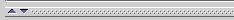

Working With a
Small Window
Working With a
Small Window

Protégé-2000 displays a lot of information in many of its windows. In some
cases, for example, if your window is sized to fit on a smaller screen, not all
the information will appear. In this case you might have trouble finding some of
the following:
To view or enlarge these areas, try any of the following:
- Enlarge the Protégé window by dragging it. A hidden section will usually
appear if the window becomes large enough.
- OR Drag the slider bar positioned where the hidden section should
be. For example, to view the Search Results Pane,
place the cursor over the slider bar at the right of the window, and drag
the bar to the left. To view the Superclasses Pane,
Query Library Pane, or Classes
Pane, place the cursor over the slider bar at the bottom left of the window
and drag the bar up.

- OR If your window is very small, you can toggle between two panes
by clicking on the arrows on the slider bar. For example, to toggle between
the Query Pane and the Query Library Pane,
click the up arrow on the slider bar to display only the Query Library Pane;
click the down arrow to display only the Query Pane.
You can also customize the distance between any of the panes using the slider
bars in the same way.
Next: Working With Notes
Project Table of Contents